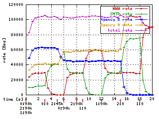
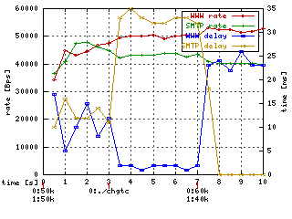

Trafiği öncelikli duruma getirme konusunun iki yüzü vardır. İlki band genişliğindeki fazlalığın kardeşler arasında nasıl dağıtılacağını etkiler. Şimdiye kadar gördüğümüz, band genişliğindeki fazlalığın hız oranlarına göre dağıtıldığı şeklindeydi. Şimdi, Paylaşım Hiyerarşisi bölümündeki temel yapılandırmayı (tavan hız ve sıçrama olmaksızın hiyerarşi) kullanıp önceliği SMTP (yeşil) için 0'a (yüksek), diğerleri için 1'e değiştirdim.Paylaşım bakımından öncelikli sınıfın artan band genişliğinin tamamını aldığını görürsünüz. Burada kural artan band genişliği, önce daha yüksek öncelikli sınıflara ikram edilir şeklindedir. Ancak garantili hız ve hız tavanı ile ilgili kurallar hala geçerlidir.Sorunun bir de ikinci yüzü vardır: paketin toplam gecikmesi. Çok hızlı olan ethernette gecikme ölçümü görece zordur (gecikme ihmal edilebilir miktardadır). Fakat küçük bir yardımla bu sorun aşılabilir. Hız sınırı 100 kbps'in altında olan bir sınıfa sahip bir HTB'den başka bunun çocuğu olarak ikinci bir HTB ekleyebiliriz (ölçmeyi bu ikincisinde yapacağız). Böylece, daha büyük gecikmeli daha yavaş bağlantıyı taklit edebiliriz. Basit olması için iki sınıflı bir senaryo kullanacağım:# gecikme bireştirici için kuyruklama düzeni tc qdisc add dev eth0 root handle 100: htb tc class add dev eth0 parent 100: classid 100:1 htb rate 90kbps # gerçek ölçütlerde kuyruklama düzeni tc qdisc add dev eth0 parent 100:1 handle 1: htb AC="tc class add dev eth0 parent" $AC 1: classid 1:1 htb rate 100kbps $AC 1:2 classid 1:10 htb rate 50kbps ceil 100kbps prio 1 $AC 1:2 classid 1:11 htb rate 50kbps ceil 100kbps prio 1 tc qdisc add dev eth0 parent 1:10 handle 20: pfifo limit 2 tc qdisc add dev eth0 parent 1:11 handle 21: pfifo limit 2

Not HTB, başka bir HTB'nin çocuğu olarak, aynı HTB'nin içindeki başka bir sınıfın altındaki sınıfla aynı DEĞİLdir. HTB içindeki sınıf gönderebildiğinde donanımın gönderebileceği kadar erken göndereceği için bu böyledir. Dolayısıyla, sınır altındaki sınıfın gecikmesi sadece donanım tarafından sınırlanır, ata sınıflar tarafından değil.HTB altında HTB durumunda, dıştaki HTB herşeyiyle yeni donanımı taklit eder (daha büyük gecikmeyle).Bireştirici her iki sınıf için 50 kbps üretmeye ayarlanır ve 3. zaman noktasında şu komutu çalıştırır:tc class change dev eth0 parent 1:2 classid 1:10 htb \ rate 50kbps ceil 100kbps burst 2k prio 0

Gördüğünüz gibi SMTP'nin gecikmesi artarken WWW sınıfının gecikmesi sıfıra yakın değerlere düşmektedir. Gecikmeyi iyileştirmek için önceliği arttırırsanız daima diğer sınıfın gecikmesinin kötüye gitmesine yol açarsınız.Daha sonra (7. zaman noktasında) bireştirici WWW'yi 60 kbps hızda, SMTP'yi de 40 kbps hızda üretmeye başlar. Bundan sonraki ilginç davranışı gözlemleyebilirsiniz. Sınıf (WWW) sınırı aştığında HTB band genişliği için sınırın altında kalana öncelik verir.Hangi sınıfa öncelik vermelisiniz? Genelde bunlar gerçekte düşük gecikme gerektiren yerlerdeki sınıflardır. Örnek, görsel veya işitsel trafik (trafiğin başka bir sınıf tarafından öldürülmemesi için burada gerçekten doğru hız kullanmanız gerekirdi) veya doğasında sıçramalar bulunan etkileşimli bir trafik (telnet, SSH gibi) olabilirdi ve diğer akışları olumsuz etkilemezdi.Tamamı yararlı bağlantılarda bile hoş ping gecikmeleri almak için bilinen bir yöntem ICMP'ye öncelik vermektir (fakat bağlantılılığı ölçümlerken teknik açıdan istediğimiz bu değildi).